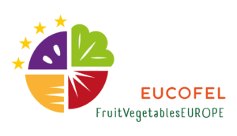

- About Us
- Our projects
- Team
- Blog
- Newsletter
- Contact
Welcome to FruitVegetablesEUROPE(EUCOFEL)
We are the European Fruit and Vegetables Association defending the EU production and trade
European Production Model
The socio-economic and regulatory framework created by the Common Agricultural Policy
Plant Health & Food Security
Plant health and food security are the producers’ number one priorities
Sustainable Food Chain
We are committed to producing socially, economically, and environmentally sustainable fruit and vegetables.
Trade & Fair Competition
The European fruit and vegetable sector feeds a large part of the European population
About Us
Founded more than 60 years ago, FruitVegetablesEUROPE (EUCOFEL) is the European Association representing the EU Fruit and Vegetables production and trade at European level .